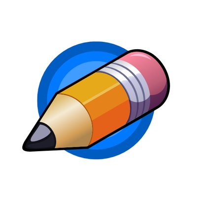

¿Que es pincel2d?
Pencil2D es un software de animación 2D gratuito y de código abierto para sistemas operativos Windows, macOS y tipo Unix. Se utiliza para realizar dibujos animados utilizando técnicas tradicionales (trazar dibujos, onion skinning etc.), gestionar dibujos vectoriales y de mapa de bits.
Pencil2d
